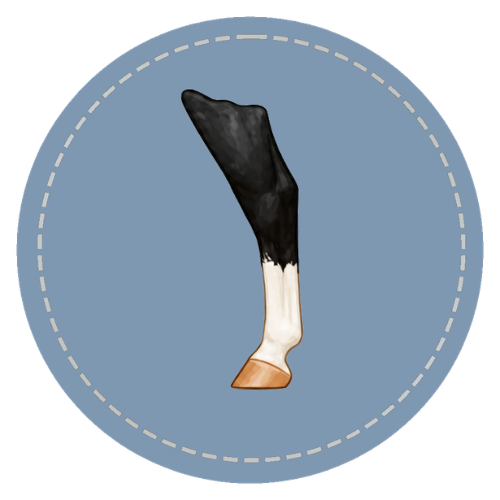
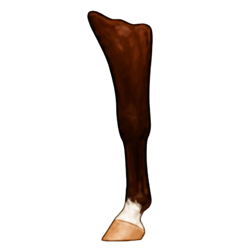
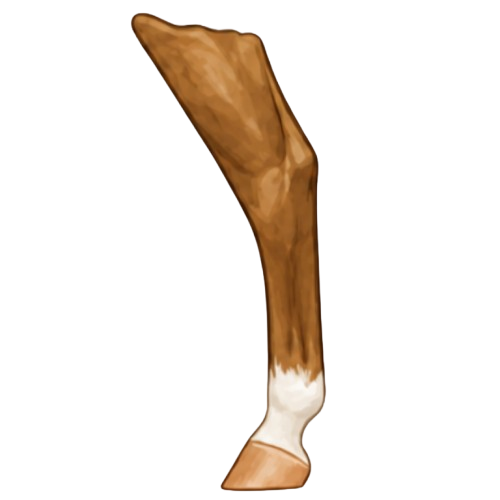

Which Leg?
Name the exact leg a marking is on: left front, right front, left hind, or right hind. Naming the right leg is an important part of a good description.
Leg markings help describe and identify horses. A good description says which leg is marked, how high the white goes, and any details that help tell one horse from another.

White leg markings help identify horses. They are easy to see, and they usually stay the same for a horse's whole life. Some horses have white on one leg, some on several legs, and some have none at all.
When you describe a leg marking, name both the marking and the leg it is on. For example, "left hind sock" is clearer than just "sock," because the same marking can appear on any of the four legs. Clear descriptions help horses get identified and recorded correctly.





💡 Did You Know
Leg markings are one of the oldest ways to identify horses. Ancient Greek and Roman army records described horses with leg marking terms much like the ones we use today. White leg markings were easy to spot from far away, even when a horse was moving.
A leg marking's name comes from where it is and how high the white goes up the leg. White that covers only the coronet band has a different name than white that reaches the pastern, the fetlock, or higher. Learning where the white starts and stops helps you name leg markings correctly.
Name the exact leg a marking is on: left front, right front, left hind, or right hind. Naming the right leg is an important part of a good description.
How high the white goes sets the name. White near the hoof is a coronet or a pastern, depending on how far up it reaches below the fetlock. White above the fetlock is a sock or a stocking, depending on how high it goes up the cannon bone.
Some markings do not wrap all the way around the leg. When white covers only part of the way around, describe it as a partial marking instead of giving it a full name.
Small details like ermine marks and dark spots add more to a description. Noting these helps make a more complete record.
Describe leg markings in the same order each time so they are clear. Start with the side of the horse, then the leg (front or hind), then the marking, then how high it goes, then any extra details.